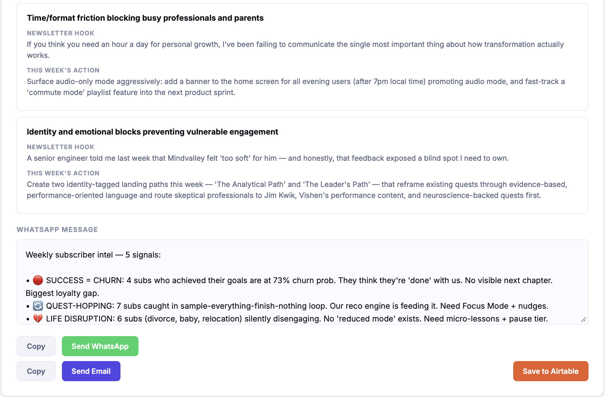

01
Recurring churn themes
Claude groups all recent subscriber diagnoses into 3–5 named patterns. Each card shows subscriber count, average churn risk, root cause, and what the product or content team could do about it.

Four screens from a live analysis run. The agent reads from Airtable, clusters signals with Claude, and delivers everything below in one session.
Claude groups all recent subscriber diagnoses into 3–5 named patterns. Each card shows subscriber count, average churn risk, root cause, and what the product or content team could do about it.
Expanding a theme reveals representative quotes pulled verbatim from individual subscriber diagnoses, plus specific content and product opportunities tied to that cluster.

A second Claude pass synthesises the themes into a founder-level brief — headline, 3–5 sentence summary, and a newsletter hook + concrete action for each theme. Written to be acted on, not read and archived.

The brief is formatted as a short WhatsApp message — bullet points, real numbers, one closing question. One click copies it. Another sends it directly via WhatsApp or email.

Takes about 30 seconds to run on your own data.
Run it yourself →